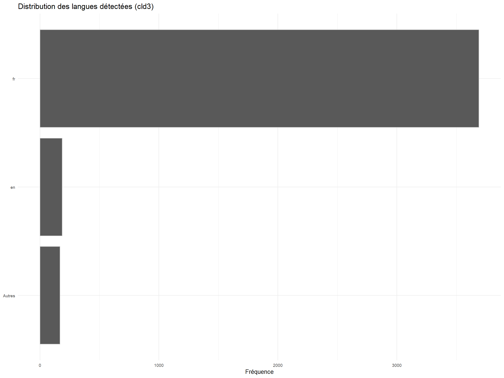
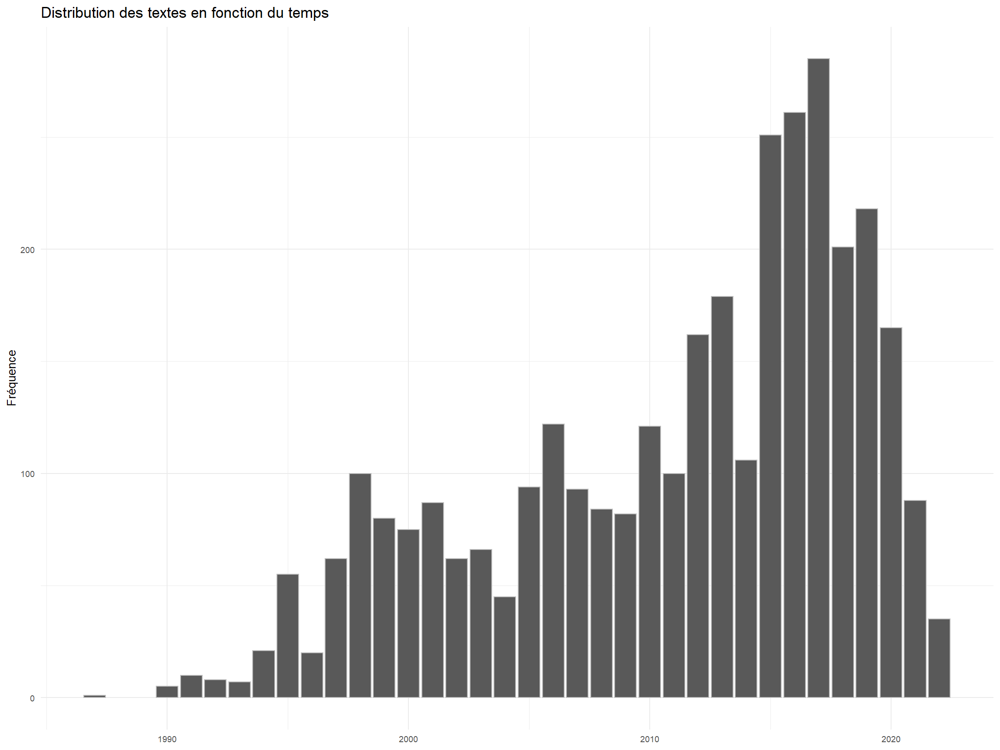
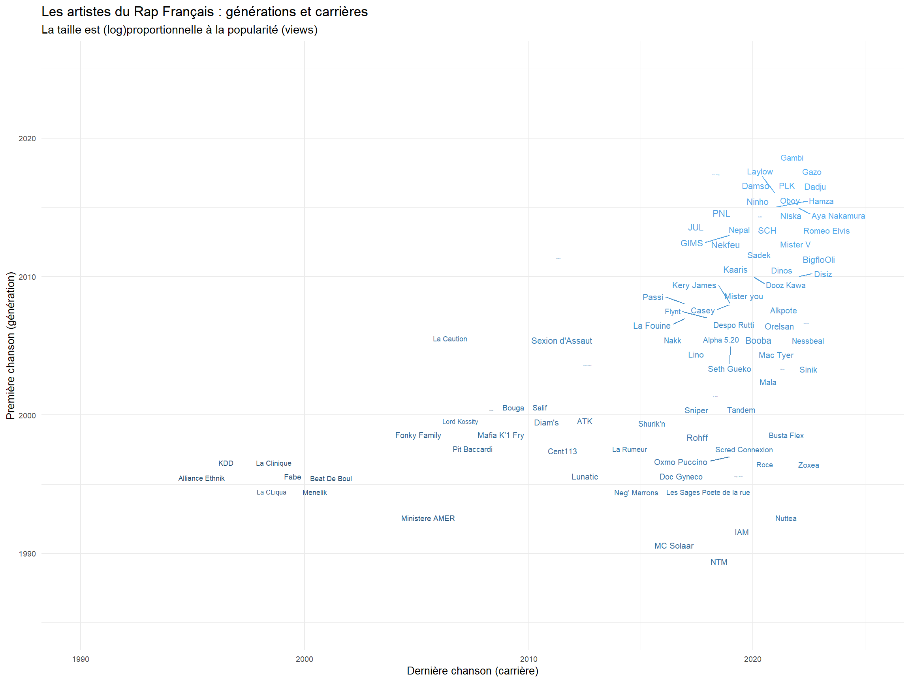
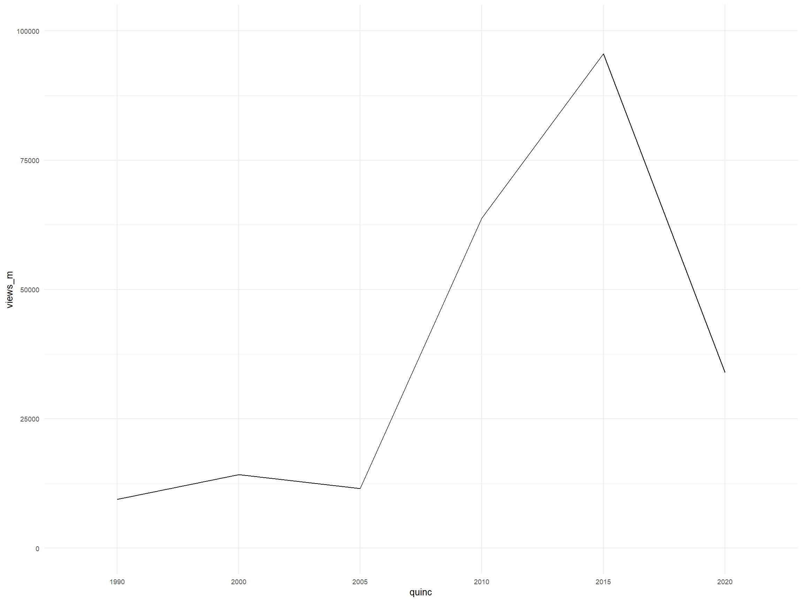

library(tidyverse)
library(quanteda)
library(quanteda.textmodels)
library(quanteda.textstats)
library(ggwordcloud)
library(quanteda.textplots)
library(tidytext)
library(udpipe)
library(Rtsne)
library(ggrepel)
library(seededlda)
# syntaxis and lexical annotations
My_Theme = theme(
axis.title.x = element_text(size = 10),
axis.text.x = element_text(size = 7),
axis.text.y = element_text(size = 7),
axis.title.y = element_text(size = 10))
theme_set(theme_minimal()+My_Theme)Rap francais : les données
Introduction
L’analyse des textes de rap n’est pas un nouvel exercice, cependant une approche statistique est plutôt rare, en particulier pour le rap français.
Quelques premières sources cependant :
https://www.kaggle.com/code/rikdifos/rap-lyrics-text-mining
https://www.telerama.fr/musique/une-prof-de-francais-examine-les-paroles-de-pnl,139231.php
https://remibacha.com/eminem-text-mining-r/
https://doi.org/10.4000/histoiremesure.3889
Son intérêt principal c’est sa langue. Une langue populaire, une langue cryptique, une langue déchirée, une langue créole, une langue médiatique. C’est une langue qui se produit dans une jonction sociale étonnante ; une réponse de l’opprimé avec les moyens de l’oppresseur, pas une résistance mais une subversion. Elle se fait de formules, des punch line, des slogans, se nourrit de cinéma dans sa narration, c’est une langue d’image. C’est une langue qui dit je, qui s’affirme. Qui transgresse.
https://genius.com/Genius-france-origine-des-rappeurs-francais-lyrics
Nous ne chercherons pas à en rendre l’âme, le but ici est juste d’éprouver certains outils d’analyse NLP à la matière de cette langue.
Dans ce premier script, nous constituons le corpus, et nous en donnons quelques caractéristiques.
la suite vient ici
Tools
Les packages que nous utilisons.
On met en forme le jeu de données
Des problèmes sont à résoudre :
La presque centaine d’artistes représentés est-elle une bonne représentation du rap français de ces trente dernières années?
Les dates manquent. Juste un peu de curation pour résoudre ce problème ?
Que faire de la répétition, des couplets et des refrains? Prendre le texte dans son entier? ou prendre pour unité ses séquences? Parfois les voix sont polyphoniques, le par est souvent un récit multiphonique. Il y a plusieurs narrateurs. C’est une forme qui vient des respons.
Le vers est là, la phrase est absente. On choisit de faire du vers une phrase en le ponctuant. C’est notre choix, mais il est discutable. Une option avancé serait d’appliquer un système automatique de ponctuation.
Le processus de structuration pas forcément évident. Il va falloir :
d’abord concaténer les textes
puis séparer les textes
séparer les types de contenu en colonnes. ( date, view, auteurn titre, paroles)
corriger les anomalies les plus importantes.
Le processus est spécifique, il s’appuie sur la régularité des éléments d’information. Il exige de lire le texte, d’examiner les résultats partiels des traitements, de repérer les anomalies les plus fréquentes. Il n’y a pas vraiment d’automatisme, mais un travail de digestion avec pas mal de fonction de manipulation des chaînes de caractères.
# On lit et fusionne les fichiers
file.names <- dir("./lyrics_2/", pattern = "*.txt", recursive = TRUE, full.names = TRUE)
#lire
text <- lapply(file.names, FUN = read_file)
#concaténer
text <- do.call(rbind, text) %>%
as.data.frame()
#réunir et clarifier les noms de variables : des auteurs et leurs textes
text<-cbind(file.names, text) %>%
mutate(file.names=str_remove(file.names,"./lyrics_2/"),
file.names=str_remove(file.names,"_lyrics.txt")) %>%
rename(Artiste=file.names,
Song=2)
#on splitte les chansons avec une miraculeuse balise
text<-separate_rows(text, Song, sep = "Embed\n")
#on sépare les éléments du champs texte : date, consultations, texte
text1<-text%>%
separate(Song,c("Date", "B"), sep = "\nPageViews")%>%
mutate(Date=str_remove(Date,"\nDate : "),
Date=str_remove(Date,"Date :" ),
Date=str_trim(Date),
Year=str_sub(Date,1,4)) %>%
separate(B,c("Views", "C"), sep = "Lyrics") %>%
separate(Views,c("Views", "Titre"), sep = "\n") %>%
mutate(Views=str_remove(Views, " : "))
#on nettoie les strings
text1$Year<-as.numeric(text1$Year)
text1$Views<-as.numeric(text1$Views)
# surtout les paroles
# mais on ne supprime pas la répétition des refrains
#supprimer les fin de vers, à moins qu'on les replace d'un point ?
#supprimer les mention refrain/ couplet (mais on on pourrait découper)
text1$Paroles<-str_replace_all(text1$C, "\\[.*\\]", "XXXXX")
text1$Paroles<-str_replace_all(text1$Paroles,"\n", ". ")
text1$Paroles<-str_remove_all(text1$Paroles,"XXXXX")
#une balise perdue
text1$Paroles<-str_remove_all(text1$Paroles, "You might also like")
text1$n_words<-str_count(text1$Paroles, "\\S+") #nombre de mots
#detection de langue
library(cld3)
lang<-as.data.frame(detect_language(text1$Paroles))%>%
rename(langue=1)
text1<-cbind(text1, lang)
foo<-text1 %>%
mutate(langue=ifelse(is.na(langue),"Autres", langue)) %>%
mutate(langue=ifelse(langue!="fr" & langue!="en", "Autres",langue))%>%
group_by(langue)%>%
summarise(n=n()) %>%
mutate()
ggplot(foo, aes(x=reorder(langue,n), y=n))+
geom_bar(stat="identity", color="grey")+
coord_flip()+
labs( title = "Distribution des langues détectées (cld3)", x=NULL, y = "Fréquence")
#filtrer le contenu en éliminant l'anglais, pour les dates ça dépend de l'empan. On choisit un pas de 5 ans. On n'éliminera donc pas les plus plus texte.
text1<-text1 %>%
# filter(Year>1989)%>%
filter(langue!="eng")Une première idée du corpus
Il manque un quart des dates, ce serait bien de compléter. Il y a des biais d’archivages, les périodes passées ont un faible effectif, ainsi que les présentes. Le corpus couvre surtout les années 2010 2020.
ggplot(text1,aes(x=Year))+
geom_bar(, color="grey")+
labs(title="Distribution des textes en fonction du temps", x=NULL, y="Fréquence")
ggsave("RapFArtistesTextY.svg", plot=last_plot(),width = 28, height = 20, units = "cm")Les artistes
foo <-text1%>%
group_by(Artiste)%>%
summarise(n=n(),
Views=sum(Views,na.rm=NA),
Min =min(Year,na.rm = TRUE),
Max=max(Year,na.rm = TRUE))%>%
filter(Min>0 & Max>0)
ggplot(foo,aes(x=Max, y=Min))+
geom_text_repel(aes(label=Artiste, size=log10(Views+1), color=Min*Max),max.overlaps = 30)+
scale_size(range = c(.5, 3))+
labs(title= "Les artistes du Rap Français : générations et carrières",
subtitle = "La taille est (log)proportionnelle à la popularité (views)",
y="Première chanson (génération)",
x= "Dernière chanson (carrière)")+
theme(legend.position="none")+
xlim(1990, 2025)+
ylim(1985,2025)+
My_Theme # + geom_smooth()
ggsave("RapFArtistes.svg", plot=last_plot(),width = 28, height = 20, units = "cm")Mesurer le succès
Le nombre de fois où les paroles ont été consultées. On va raisonner par quinquennat.
table(text1$Year)
1987 1990 1991 1992 1993 1994 1995 1996 1997 1998 1999 2000 2001 2002 2003 2004
1 5 10 8 7 21 55 20 62 100 80 75 87 62 66 45
2005 2006 2007 2008 2009 2010 2011 2012 2013 2014 2015 2016 2017 2018 2019 2020
94 122 93 84 82 121 100 162 179 106 251 261 285 201 218 165
2021 2022
88 35 text1$quinc<-NA
text1$quinc[text1$Year<2000] <-"1990"
text1$quinc[text1$Year>1999 & text1$Year<2005] <-"2000"
text1$quinc[text1$Year>2004 & text1$Year<2010] <-"2005"
text1$quinc[text1$Year>2009 & text1$Year<2015] <-"2010"
text1$quinc[text1$Year>2014 & text1$Year<2020] <-"2015"
text1$quinc[text1$Year>2019] <-"2020"
table(text1$quinc)
1990 2000 2005 2010 2015 2020
369 335 475 668 1216 288 text1$quinc <- factor(text1$quinc,
levels=c("1990",
"2000",
"2005",
"2010",
"2015",
"2020"))
text1<-text1 %>%filter(!is.na(quinc))
table(text1$quinc)
1990 2000 2005 2010 2015 2020
369 335 475 668 1216 288 foo<- text1 %>%
group_by(quinc) %>%
summarise(views_m=mean(Views, na.rm=TRUE),
views_s=sd(Views, na.rm=TRUE))
# la fréquentation des lirycs / old star are gone
ggplot(foo,aes(x=quinc,y=views_m, group=1))+
geom_line()+
ylim(0,100000)
text1<-text1 %>%
select(- 5)
write.csv(text1, "RapLyrics.csv")
ggsave("RapFArtistesPop.svg", plot=last_plot(),width = 28, height = 20, units = "cm")